1. KMP算法是什么？
提出一个问题，给你两个字符串s和p（p的长度不超过s的长度，且s和p都不是空的），问s中是否包含p？
例如：
- s=“hello, java”, p = “java”，那么s包含p
- s=“github”, p=“ppt”, s不包含p
能否写出一个程序高效地解决这个问题。
我们能容易想到这样的方法：
设置两个指针，i和j，都初始化为0，我们对比s在i位置，p在j位置的字符。如果s[i]==p[j]，那么i和j都移到下一个位置。否则j回退到0，i回退到1，继续上述过程，如果在下一次比较中，还是出现了不匹配的字符，那么j回退到0，i回退到2，继续……，周而复始。直到某一次匹配中，如果j到达越界位置，那么s包含p，否则s不包含p。代码如下：
1 | public class StrContains { |
这样的查找方法，在遇到s=“aaaaaaaaaaaaab”，p=“aab”这样的情况的时候，会使得p只有在最后一次匹配的时候，才可以得到匹配。假设s的长度是$N$，p的长度是$M$，那么显然的最坏情况下时间复杂度就是$O(N*M)$。而KMP算法能做到最坏情况下$O(N+M)$的时间复杂度。它是怎么做的呢？我们一起来看看吧。
2. KMP算法的计算过程
2.1. 一个启发过程
我们上面的暴力方法是基于这样的一个尝试的思路，如果s中有一个子串和p是匹配的，因为任何一个子串都有一个开头位置，那么这个和p匹配的子串当然也有一个开头位置，又因为我们不知道哪个开头位置的子串和p是匹配的，因此我们尝试所有可能的开头。如果我们尝试完所有的开头位置，都没有发现一个子串可以和p匹配，那么s中就没有一个子串和匹配，即s不包含p，反之s包含p。那么这个过程它为什么低效呢？我们来看一下s=“aaaaaaaaab”和p=“aaab”的匹配过程。
当我们发现某一个开头的尝试已经宣告失败的时候，此时只能选择下一个开头，继续从头开始匹配。那么此时指向s的指针会回退，之前已经匹配的部分结果完全抛弃，从新开始，因此这个方法是低效的。
如果某一次尝试失败了，那么之前已经匹配的部分（之前做过的努力）能否给我们提供一些帮助，加速我们的匹配过程，甚至能使得字符串s上的指针不回退呢？我们调整的时候，需要遵循什么原则呢？
为了便于说明j的调整，下面我们举一个明显的例子。请看字符串s=“acacab”，和字符串p=“acab”的匹配过程。
那么如果已经匹配的部分有多个前缀和后缀是匹配的呢？我们怎么选择？请看s=“aaaab”和p=“aaab”的匹配过程。
总结一下：此时我们似乎找到了，保证s指针不回退的时候，p的指针的调整方案，即当我们发现某一次匹配失败的时候，我们需要找出前面已经匹配部分的前后缀最大匹配长度，假设为next，那么我们只需要把j调整为next，继续进行匹配操作即可。
2.2. next数组
2.2.1. 什么是next数组？
我们在进行真正的匹配之前，我们要先计算好，每一个元素的next值（next值的含义就是当前元素失去匹配的时候，它前面部分字符串的前后缀最大匹配长度，这个前后缀不包含自己），看下面对字符串“caccacb”的next值的定义过程：
2.2.2. 使用next数组加速匹配过程
如果我们在匹配之前，得到这么一个，关于模式串p的每一个位置index失去匹配后，模式串的匹配指针应该调整为next[index]的next数组的话，那么我们的匹配过程可以变成这样：
1 | public class StrContainsKmp { |
next数组能加速匹配过程，可以从下面两个方面来理解：
保证i指针不回退，指导j指针的调整
在我们匹配失败的时候，它可以利用我们之前已经匹配的部分字符串（以前做过的努力），在保证i（字符串s的匹配指针）不回退的情况下，指导此时指针j（模式串的匹配指针）应该做怎样的调整。前面的图示已经向大家说明了这一点。
跳过了一些无需验证的可能性
还记得我们的暴力做法吗？它尝试字符串s中每一个可能的开头位置（即验证所有的可能性），而next数组指导j的调整，可以跳过一些根本不可能匹配出来模式串p的位置，如下图所示：
这两种理解是等价的。
2.2.3. next数组正确性分析
上面我们举了一个例子说明next数组能够指导j指针的调整，同时保证i指针不回退，并且还能跳过那些不可能的开头位置。那么为什么呢？我们这里给出一般性的说明。如图所示：

2.2.4. 求解next数组
既然next数组这么好用，我们如何快速得到它呢？
3. 代码和测试程序
3.1. 完整代码
1 | public class StrContainsKmp { |
3.2. 复杂度分析
设字符串s的长度是$N$，p的长度是$M$，我们看估计contains方法中while循环体的一共执行多少次。我们设置两个量，一个是$i$，一个是$i-j$，其中i的范围$[0,N]$，i-j的范围$[0,N]$。
- 如果代码命中第7行的分支，那么会推高$i$，但是$i-j$保持不变
- 如果代码命中第15行的分支，那么$i$和$i-j$都会被推高
- 如果代码命中第21行的分支，那么$i$保持不变，$i-j$会被推高。
且在整个while的执行过程中变量$i$和$i-j$不会减小，那么这个while循环运行的结果就是把这两个变量不断推到最大值。可以知道这两个变量的最大值都是$N$，因此while循环的执行次数不会超过$2N$次，因此时间复杂度$O(N)$。
空间复杂度$O(N)$。
3.3. 测试程序
1 | import java.util.Random; |